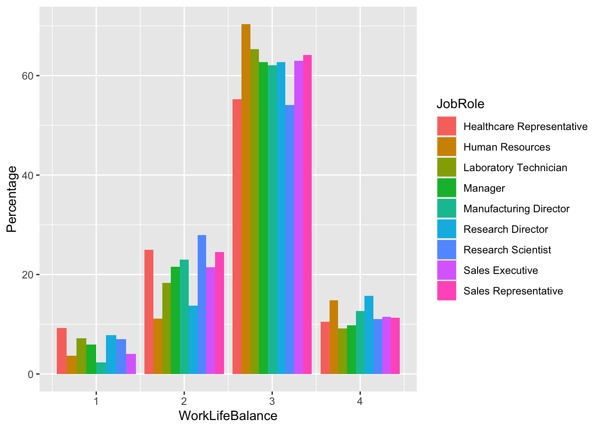
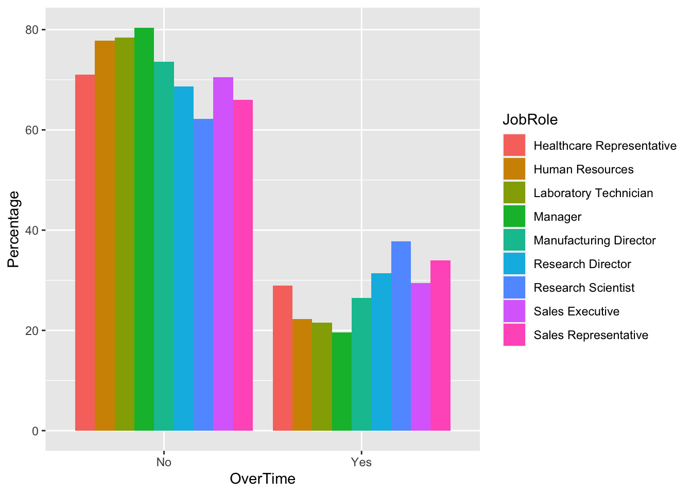
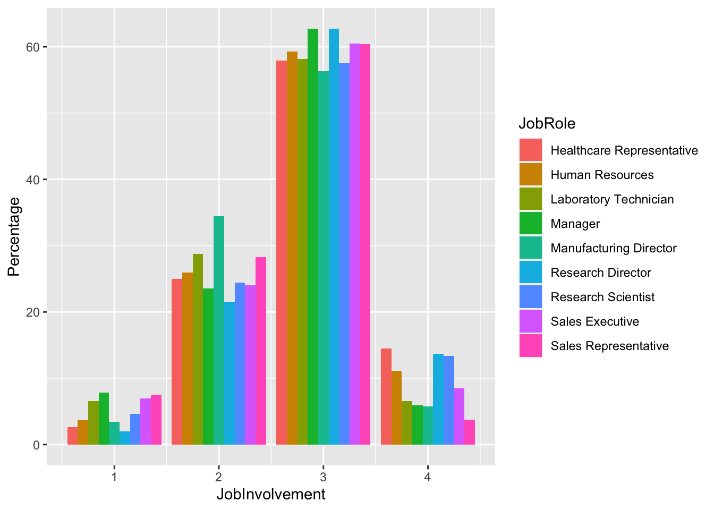

This is brief analysis capturing the factors that affect attriction and montlhy income from the available data that is provided in the data set used for this study. the data set consist of 39 variables and 890 observations, using employeee data.
This is a look into the factors causing attrition. the variables TotalWorkingYears, JobInvolvement and OverTime were found to be adequate for classification, with a Sensitivity of 0.8952 and Specificity of 0.8750.
splitPerc =.75
set.seed(7)
trainIndices = sample(1:dim(CS2)[1],round(splitPerc * dim(CS2)[1]))
trainCS2_A = CS2[trainIndices,]
testCS2_A = CS2[-trainIndices,]
classifications = knn(trainCS2_A[,c('TotalWorkingYears','JobInvolvement','OverTime')] ,testCS2_A[,c('TotalWorkingYears','JobInvolvement' ,'OverTime')],trainCS2_A$Attrition, prob = TRUE, k = 5)
table(testCS2_A$Attrition,classifications)## classifications
## No Yes
## No 188 1
## Yes 22 7confusionMatrix(table(testCS2_A$Attrition,classifications))## Confusion Matrix and Statistics
##
## classifications
## No Yes
## No 188 1
## Yes 22 7
##
## Accuracy : 0.8945
## 95% CI : (0.8459, 0.9319)
## No Information Rate : 0.9633
## P-Value [Acc > NIR] : 1
##
## Kappa : 0.3404
##
## Mcnemar's Test P-Value : 3.042e-05
##
## Sensitivity : 0.8952
## Specificity : 0.8750
## Pos Pred Value : 0.9947
## Neg Pred Value : 0.2414
## Prevalence : 0.9633
## Detection Rate : 0.8624
## Detection Prevalence : 0.8670
## Balanced Accuracy : 0.8851
##
## 'Positive' Class : No
## classifications2 = knn(trainCS2_A[,c('TotalWorkingYears','JobInvolvement','OverTime')] ,CS_NA[,c('TotalWorkingYears','JobInvolvement' ,'OverTime')],trainCS2_A$Attrition, prob = TRUE, k = 5)
CS_NA$Predict_Attrition <- classifications2
Attrition_pred <- CS_NA %>% dplyr::select(ID,Predict_Attrition)This is a look into the factors for income prediction. First EDA is conducted on the data to check for correlation and confoundong factors.
CS2$Department <- as.factor(CS2$Department)
boxplot(CS2$MonthlyIncome~CS2$Department, main=toupper("MonthlyIncome by Department"), font.main=3, cex.main=1.2, xlab="Department", ylab="MonthlyIncome", font.lab=3, col="darkgreen")boxplot(CS2$MonthlyIncome~CS2$JobLevel, main=toupper("MonthlyIncome by JobLevel"), font.main=3, cex.main=1.2, xlab="JobLevel", ylab="MonthlyIncome", font.lab=3, col="darkgreen")### Pearson Correlation
CS2$Department <- as.numeric(CS2$Department)
CS2$JobLevel <- as.numeric(CS2$JobLevel)
a = CS2 %>% dplyr::select(Department, JobLevel,TotalWorkingYears)
cor(a)## Department JobLevel TotalWorkingYears
## Department 1.00000000 0.1032270 -0.01581234
## JobLevel 0.10322699 1.0000000 0.78075235
## TotalWorkingYears -0.01581234 0.7807524 1.00000000A lack of fit test was conducted on the department varaible to check if the linear model well fitted to the seperate means model and it was found to be similar, hence the linear regrssion model is appropriate for this varibable in the model. P value was found to be 0.18 which is higher than the alpha level of 0.05
Reduced <- lm(MonthlyIncome ~ Department, data = CS2)
Full <- lm(MonthlyIncome ~ 0 + as.factor(Department), data = CS2)
anova (Reduced,Full)## Analysis of Variance Table
##
## Model 1: MonthlyIncome ~ Department
## Model 2: MonthlyIncome ~ 0 + as.factor(Department)
## Res.Df RSS Df Sum of Sq F Pr(>F)
## 1 868 1.8332e+10
## 2 867 1.8294e+10 1 37799773 1.7914 0.1811After the analysis we found the RMSE price to be $1371.55
CS_NS <- CaseStudy2CompSet_No_Salary
CS_NS$Department <- as.factor(CS_NS$Department)
model2 <- lm(MonthlyIncome ~ TotalWorkingYears+Department +JobLevel, data = CS3)
rmse(CS3$MonthlyIncome, predict(model2, CS3))## [1] 1371.554Checking the residual plot we can see the residuals are evenly spread, the qq plot shows there is no eveidence against normality, checking the residual plot there is no point that has both high leverage and high influence so there are no outliers, the studentised residuals are also even.
CS2I_pred = predict(model2, interval = 'predict', newdata = CS_NS)
CS_NS$Predict_Income <- CS2I_pred[,1]
Predict_Income <- CS_NS %>% dplyr::select(ID,Predict_Income)
par(mfrow = c(2, 2)) # Split the plotting panel into a 2 x 2 grid
plot(model2)The most significant variable for this model was job level followed by total working years, it was found that the sub-level sales in department provided low significance as compared to its relevance to the reference Department Human resources. However the overall model proved to be significant with a p value of <0.0001 and an adjusted R^2 of 0.9105.
summary(model2)##
## Call:
## lm(formula = MonthlyIncome ~ TotalWorkingYears + Department +
## JobLevel, data = CS3)
##
## Residuals:
## Min 1Q Median 3Q Max
## -5553.7 -827.7 22.8 780.3 4157.5
##
## Coefficients:
## Estimate Std. Error t value Pr(>|t|)
## (Intercept) -1418.23 248.40 -5.709 1.56e-08 ***
## TotalWorkingYears 48.35 10.10 4.789 1.97e-06 ***
## DepartmentResearch & Development -302.23 239.71 -1.261 0.20770
## DepartmentSales -724.49 247.48 -2.927 0.00351 **
## JobLevel 3774.56 70.06 53.874 < 2e-16 ***
## ---
## Signif. codes: 0 '***' 0.001 '**' 0.01 '*' 0.05 '.' 0.1 ' ' 1
##
## Residual standard error: 1376 on 865 degrees of freedom
## Multiple R-squared: 0.9109, Adjusted R-squared: 0.9105
## F-statistic: 2211 on 4 and 865 DF, p-value: < 2.2e-16We can see that it seems sales executives have the best work life balance as they are the highest both in the better and best levels of this category. In the second plot we see that research scientist are the one that work most over time and sales representatives are following closely behind. Once again we see sales executives as the most involved in their jobs as the they are by far the highest in this area. and finally Sales executives are the most satisfied with their jobs with research scientist following closely behind
W_CS3 <- CS3 %>%
count(JobRole, WorkLifeBalance) %>%
group_by(JobRole) %>%
transmute(WorkLifeBalance, Percentage=n/sum(n)*100)
ggplot(W_CS3, aes(fill=JobRole, y=Percentage, x=WorkLifeBalance)) +
geom_bar(position="dodge", stat="identity")
O_CS3 <- CS3 %>%
count(JobRole, OverTime) %>%
group_by(JobRole) %>%
transmute(OverTime, Percentage=n/sum(n)*100)
ggplot(O_CS3, aes(fill=JobRole, y=Percentage, x=OverTime)) +
geom_bar(position="dodge", stat="identity")
J_CS3 <- CS3 %>%
count(JobRole, JobInvolvement) %>%
group_by(JobRole) %>%
transmute(JobInvolvement, Percentage=n/sum(n)*100)
ggplot(J_CS3, aes(fill=JobRole, y=Percentage, x=JobInvolvement)) +
geom_bar(position="dodge", stat="identity")
B_CS3 <- CS3 %>%
count(JobRole, JobSatisfaction) %>%
group_by(JobRole) %>%
transmute(JobSatisfaction, Percentage=n/sum(n)*100)
ggplot(B_CS3, aes(fill=JobRole, y=Percentage, x=JobSatisfaction)) +
geom_bar(position="dodge", stat="identity")